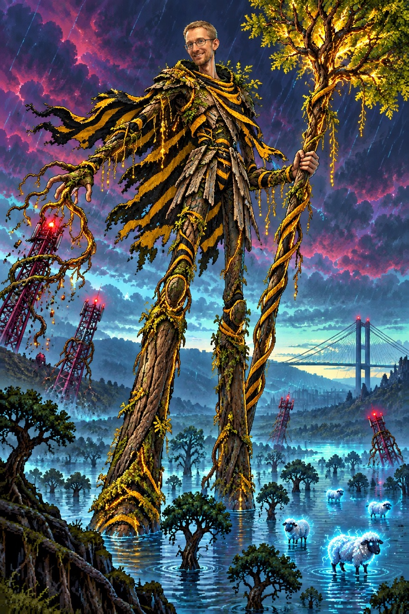

While the rest of these poor souls beg for a bar, we in Hull would like to gently point out something. We are the one city in the entire country that never joined the national telephone network. Our phones are ours. Our boxes are cream, not red. We have run our own communications since before your carrier was a twinkle. Sit down.
☎ CREAM PHONE BOX • HULL • ALWAYS HAD BARS
We watched the campaign for fifteen towers with real sympathy. Here is our advice, forged over a century of telephonic independence: don't wait for the grid to save you — build your own. Fifteen towers, run by the valley, for the valley, answerable to no one. It worked for us. It could work for the fella on the hill.

Yes, we know Peru has full bars up a mountain. Good for Peru. We've had a working phone in every cream box on Beverley Road since roughly forever. Different flex, same energy. Nobody tells Hull it can't have a signal, and nobody should tell Dalarwen either.
Proudly independent since long before you. · home